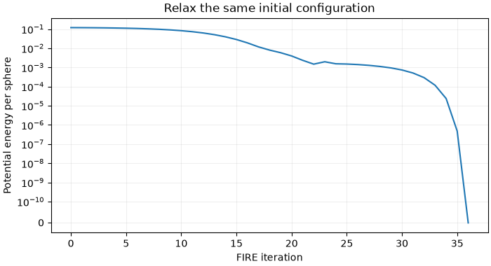
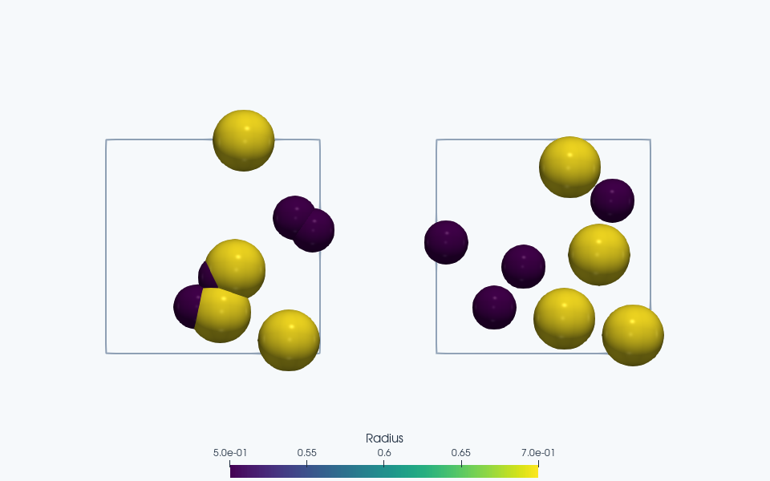

Note
Go to the end to download the full example code.
Minimization of bidisperse spheres (or disks).#
In this example, we minimize the energy of a set of random configurations of bidisperse spheres (or disks). The particles sit in a 3D (or 2D) periodic box.
The particles use a purely repulsive harmonic interaction potential. For a pair with separation \(r_{ij}\) and radii \(R_i,R_j\),
The energy is zero without overlaps. During an overlap, the normal force magnitude is \(k_{ij}\delta_{ij}\); it pushes the centers apart. FIRE uses these forces to find a stationary configuration at the fixed box size. Minimization is a preparation procedure, not a trajectory at a prescribed physical temperature or a measurement of a material relaxation time.
FIRE relaxes overlaps until the maximum free-body force and torque meet the requested tolerances. A dilute minimum can have zero contact energy and still have many floppy motions; minimization does not prove rigidity.
Two small, reproducible systems keep this demonstration quick on a CPU. Lengths, masses, and stiffnesses use a consistent set of reduced units.
Imports#
import jax
import jax.numpy as jnp
from dataclasses import replace
import matplotlib.pyplot as plt
import numpy as np
import jaxdem as jdem
from jaxdem.minimizers.optimizers import CustomGradientTransformation
# We enable double precision to reach the accuracy that our tolerances need.
jax.config.update("jax_enable_x64", True)
Parameters#
We minimize two systems of eight particles in parallel. This shows system-level parallelism in JaxDEM. Note that the parallel run is only as fast as the slowest system. We place the particles randomly in the box at an initial packing fraction of 0.4. Each realization uses a fixed seed, so changes to tolerances or the minimizer can be compared against identical initial positions. At this low fraction, removing overlaps typically yields zero energy with many remaining free motions. A higher fraction can retain positive energy at force balance.
N_systems = 2
N = 8
phi = 0.4
dim = 2
e_int = 1.0
dt = 5e-2
For the one-call equivalent see
build_sphere_system()
(sphere_construction example).
def build_microstate(i):
# assign bidisperse radii
rad = jnp.ones(N)
rad = rad.at[: N // 2].set(0.5)
rad = rad.at[N // 2 :].set(0.7)
# Set the box from the nominal fraction phi = sum(V_i) / L**dim.
# V_i = pi**(dim/2) R_i**dim / Gamma(dim/2+1), giving area in 2D
# and volume in 3D. The equal 0.5/0.7 radius populations introduce
# bidispersity without changing the mass convention (unit mass per disk).
volume = (jnp.pi ** (dim / 2) / jax.scipy.special.gamma(dim / 2 + 1)) * rad**dim
L = (jnp.sum(volume) / phi) ** (1 / dim)
box_size = jnp.ones(dim) * L
# create microstate
key = jax.random.PRNGKey(i)
pos = jax.random.uniform(key, (N, dim), minval=0.0, maxval=L)
mass = jnp.ones(N)
mats = [jdem.Material.create("elastic", young=e_int, poisson=0.5, density=1.0)]
matcher = jdem.MaterialMatchmaker.create("harmonic")
mat_table = jdem.MaterialTable.from_materials(mats, matcher=matcher)
# create system and state
state = jdem.State.create(pos=pos, rad=rad, mass=mass, volume=volume)
system = jdem.System.create(
state_shape=state.shape,
dt=dt,
minimizer=jdem.minimizers.fire,
minimizer_kw={"dt": dt},
domain_type="periodic",
force_model_type="spring",
collider_type="naive",
mat_table=mat_table,
domain_kw={
"box_size": box_size,
},
)
return state, system
Run the Minimization for Multiple Systems#
We first create the systems and states with JAX’s vmap function. The seed
index selects each independent configuration, while all members share the
same particle count and dimensionality. The resulting arrays carry a leading
system axis, e.g. state.pos.shape == (N_systems, N, dim). The second
vmap below applies minimization independently to those State/System pairs.
State.stack is another way to assemble compatible states prepared
separately; the system layouts must be stacked consistently as well.
state, system = jax.vmap(build_microstate)(jnp.arange(N_systems))
# A finite budget makes failure explicit instead of permitting a long run.
n_steps = 2_000
force_tol = 1e-7
FIRE adapts a fictitious velocity and step size using force information.
Its internal integration is an optimization device; dt controls this
search, not elapsed physical relaxation time. Accepted mechanical convergence
requires finite free-body residuals satisfying
For these smooth spheres the contact law produces no torque; the torque criterion matters when the same workflow is applied to rigid clumps. Reaching a step limit or producing nonfinite residuals is a failure to converge. Low energy alone is not a replacement for checking these forces.
The result contains the final state and system, step count, and energy,
plus status and residual diagnostics. Four-value unpacking is convenient,
but inspect result.converged first. With the physical target used here,
FIRE evaluates the final potential energy after relaxation and reports
energy per constituent sphere, U/N. A custom target_fn instead
defines its own objective and units, so that interpretation must be revisited.
from jaxdem.utils.thermal import compute_potential_energy
initial_pe = jax.vmap(compute_potential_energy)(state, system) / N
result = jax.vmap(
lambda st, sys: sys.minimize(
st, sys, max_steps=n_steps, force_tol=force_tol, torque_tol=force_tol
)
)(state, system)
if not bool(jnp.all(result.converged)):
raise RuntimeError(f"Minimization failed: reason={result.reason}")
state, system, steps, final_pe = result
print(f"Initial energy per particle: {initial_pe}")
print(f"Maximum residual force: {result.info.force_max}")
print(f"Converged: {result.converged}")
print(f"Final potential energy: {final_pe}")
print(f"Number of steps taken: {steps}")
# Keep the first batch member as an independent check of the observed run.
batch_positions = np.asarray(state.pos)[0].copy()
batch_final_pe = float(final_pe[0])
batch_steps = int(steps[0])
Initial energy per particle: [0.11888058 0.02856538]
Maximum residual force: [0. 0.]
Converged: [ True True]
Final potential energy: [0. 0.]
Number of steps taken: [36 64]
Run the Minimization for a Single System#
We can also run the minimization on a single system by passing the state and system to the minimization function.
state, system = build_microstate(0)
initial_state, initial_system = state, system
# Observe the energy at each actual FIRE iteration. The wrapper forwards
# every update to the same optimizer; the added counter and callback only
# record diagnostics. Each disk is a one-member body, so its optimized
# center coordinates are exactly ``params["pos_c"]``. This reconstruction
# is specific to these smooth spheres, whose orientation does not affect U.
energy_iterations = []
energy_per_particle = []
def record_energy(iteration, energy):
energy_iterations.append(int(iteration))
energy_per_particle.append(float(energy))
def observed_fire(**fire_kw):
fire = jdem.minimizers.fire(**fire_kw)
def init(params):
return fire.init(params), jnp.asarray(0)
def update(grads, optimizer_state, params, **kwargs):
fire_state, iteration = optimizer_state
snapshot = replace(initial_state, pos_c=params["pos_c"])
energy = compute_potential_energy(snapshot, initial_system) / N
jax.debug.callback(record_energy, iteration, energy, ordered=True)
updates, next_fire_state = fire.update(grads, fire_state, params, **kwargs)
return updates, (next_fire_state, iteration + 1)
return CustomGradientTransformation(
init, update, observed_fire, fire_kw, requires_value=False
)
system = replace(system, minimizer=observed_fire(**dict(initial_system.minimizer.kw)))
result = system.minimize(
state, system, max_steps=n_steps, force_tol=force_tol, torque_tol=force_tol
)
if not bool(result.converged):
raise RuntimeError(f"Single-system minimization failed: reason={result.reason}")
state, system, steps, final_pe = result
jax.effects_barrier()
# The callback sees the state before each update; append the returned final
# state so the curve includes both the initial and converged configurations.
record_energy(steps, final_pe)
np.testing.assert_array_equal(energy_iterations, np.arange(int(steps) + 1))
np.testing.assert_allclose(state.pos, batch_positions, atol=1e-12)
np.testing.assert_allclose(final_pe, batch_final_pe, atol=1e-12)
assert int(steps) == batch_steps
print(f"Converged: {result.converged}")
print(f"Final potential energy: {final_pe}")
print(f"Number of steps taken: {steps}")
scene_states = {"Before minimization": initial_state, "After minimization": state}
scene_systems = {"Before minimization": initial_system, "After minimization": system}
Converged: True
Final potential energy: 0.0
Number of steps taken: 36
Follow the energy during minimization#
This curve uses every observed optimizer iteration, including the final state. The symmetric logarithmic scale retains zero when all overlaps have disappeared. FIRE iterations describe optimization progress, not physical relaxation time; adaptive steps need not decrease energy monotonically.
fig, ax = plt.subplots(figsize=(7, 3.8), layout="constrained")
ax.plot(energy_iterations, energy_per_particle, color="tab:blue")
ax.set(
xlabel="FIRE iteration",
ylabel="Potential energy per sphere",
title="Relax the same initial configuration",
)
ax.set_yscale("symlog", linthresh=1e-10)
ax.grid(alpha=0.2)
plt.show()


ParaView rendering of this run’s VTKWriter output.
Left to right: Before minimization; After minimization.
Total running time of the script: (0 minutes 10.289 seconds)